HAPPY / 串联入场
算力不闲置，创造不等待
让每一份算力，去往需要之处。
COMPUTE IN MOTION · Zod
KAI / ORIGINAL ASSET LOCK
这版直接从三张已选型原稿中抠出透明角色，并启用已经确定的开心、生气、难过、喜悦四种情绪。断链界面适配角色，而不是让角色迁就界面。
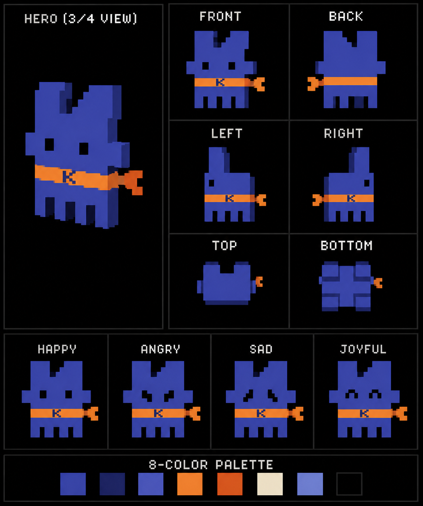
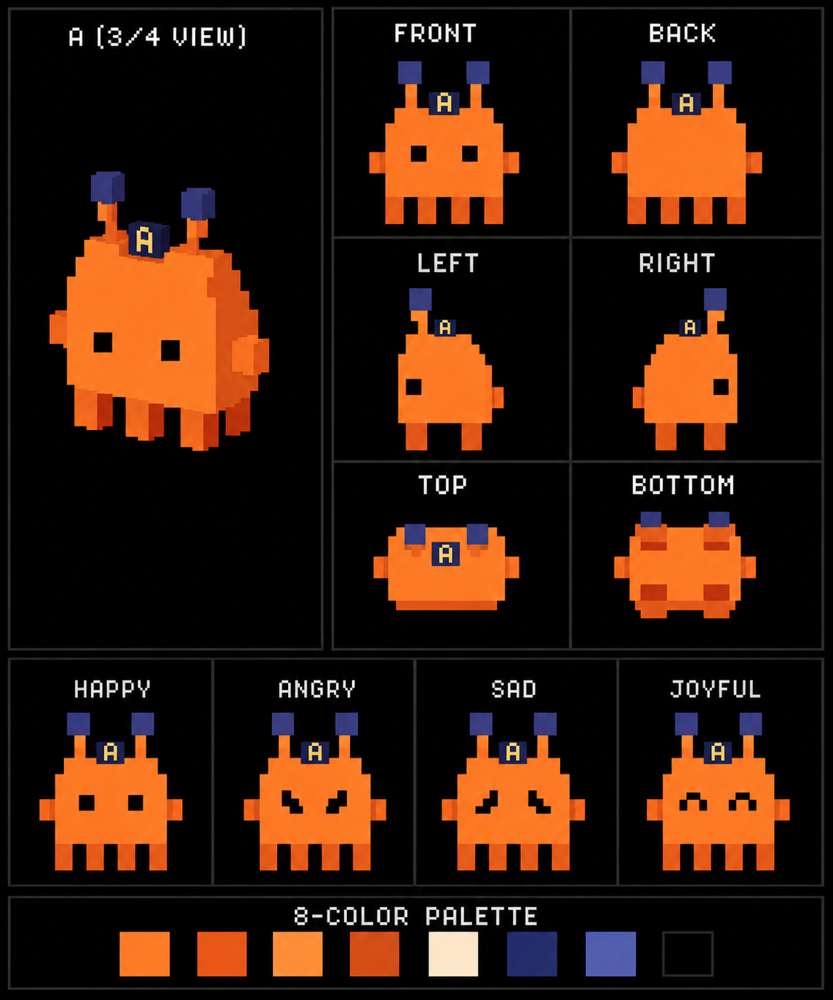
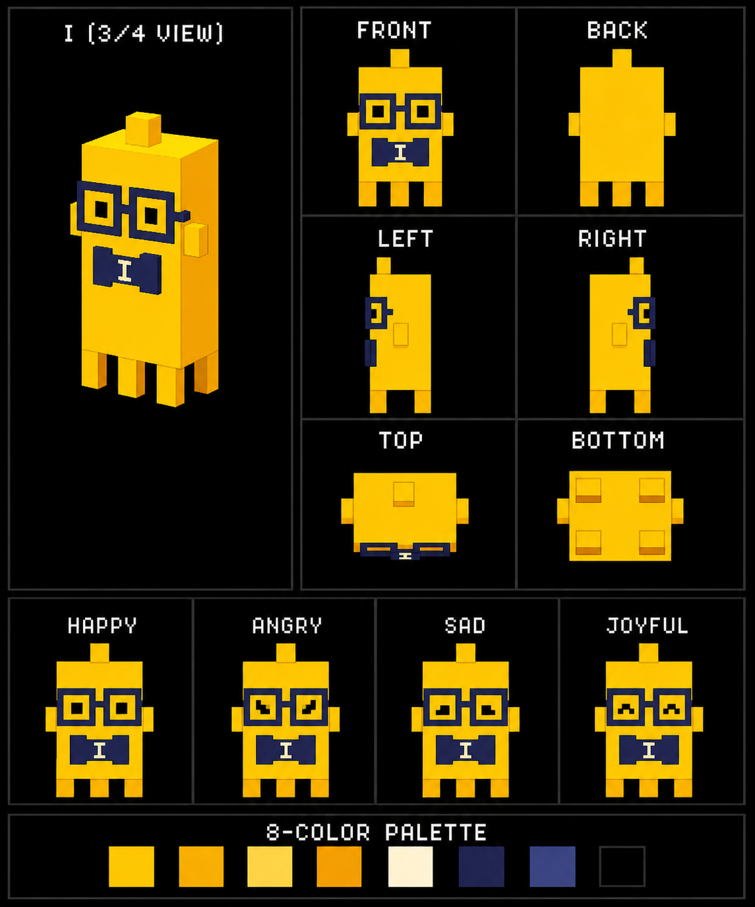
以下是透明底角色母版。后面五张图按网络状态调用已选定情绪，不修改耳朵、天线、眼镜、四肢或身体比例。
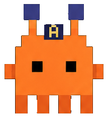
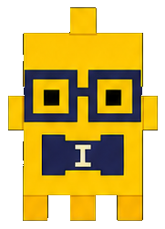
五张图分别调用原稿情绪：入场开心、丢包生气/难过、重连生气、恢复喜悦、失败难过。你确认后再接回主预览。
让每一份算力，去往需要之处。
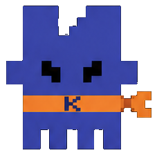
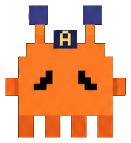
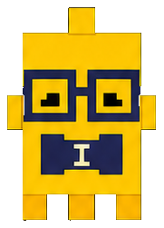
当前网络不稳定，稍后可以重新尝试。
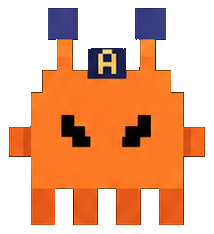
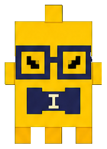
正在确认刚才的操作结果，请稍等。
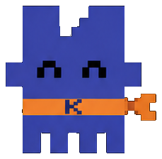
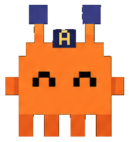
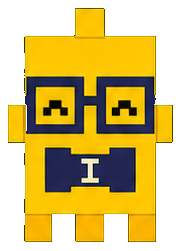
刚才的操作结果已经更新，确认后再继续。
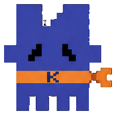
可以再试一次，或稍后继续。